У колах змінного струму існують два принципово різних види навантажень – активні і реактивні. Такі навантаження характеризуються активним і реактивним опорами.
Активний опір – це опір, який перетворює електричну енергію джерела на теплову або іншу внутрішню енергію. Типовим прикладом активного опору є резистор – пасивний елемент електричного кола.
Коливання сили струму в ділянці кола, яка має тільки активний опір, збігаються за фазою з коливаннями напруги джерела струму.
Цей факт можна легко довести, використавши закон Ома для знаходження миттєвого значення сили струму. Відомо, що:
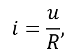
де i – миттєве значення струму, u – миттєва напруга, R – активний опір ділянки кола.
Якщо залежність напруги є синусоїдальною або косинусоїдальною, можна виразити значення миттєвої напруги u через гармонічний закон:
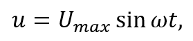
де Umax – амплітудне значення напруги, ω – кутова частота, t – момент часу.
Після підстановки виразу миттєвої напруги, формула миттєвого значення сили струму набуває вигляду:
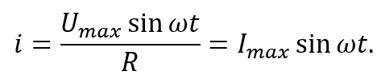
Таким чином, у ділянках кола із чисто активним опором зсуву фаз між струмом і напругою немає.
Окрім активного опору, у колах змінного струму існують так звані реактивні опори, які не призводять до незворотного перетворення електричної енергії. Проте, вони впливають безпосередньо на значення струму в колі.
У будь-якому колі змінного струму виникає ЕРС самоіндукції, яка, за правилом Ленца, завжди протидіє усім змінам електричного струму в колі. Природа цього явища полягає в тому, що змінний струм створює навколо провідника змінне магнітне поле, лінії індукції якого пронизують витки та породжують індукційне електричне поле. Воно затримує наростання струму у першій чверті періоду і протидіє його спаданню протягом другої чверті. Така постійна затримка коливань призводить до зменшення діючого значення струму. Фактично, дії ЕРС самоіндукції та індукційного поля можна класифікувати як опір. Цей опір називають індуктивним опором XL.
Залежність індуктивного опору можна пояснити на основі простого досліду. Для цього складається електричне коло, до якого входять генератор змінного струму, котушка індуктивності та амперметр. У будь-який момент часу напруга на котушці індуктивності за модулем дорівнює ЕРС самоіндукції. За збільшенням частоти сигналу сила струму зменшується, отже, індуктивний опір збільшується. Якщо збільшити індуктивність котушки, ввівши залізне осердя, струм різко зменшиться. У міру того, як осердя з котушки буде витягуватись, струм плавно зростатиме. З цього можна зробити висновок, що індуктивний опір тим більше, чи більша індуктивність. Таким чином, з досліду випливає, що індуктивний опір прямо пропорційний частоті змінного струму та індуктивності.
Формулу для визначення індуктивного опору можна отримати математичним шляхом. Якщо сила струму в колі підкорюється гармонічному закону, то ЕРС самоіндукції буде дорівнювати:
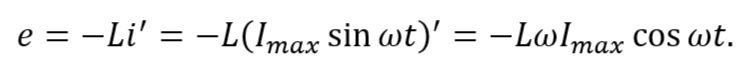
Враховуючи, що u=-e, а індуктивність є коефіцієнтом для еквівалентного перетворення напруги на струм, напруга на кінцях котушки:
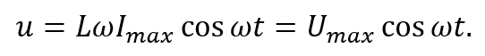
Із цієї рівності безпосередньо випливає вираз для індуктивного опору:
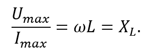
Індуктивний опір можна визначати і через відповідні діючі значення сили струму і напруги:
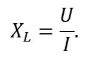
У колі з чистим індуктивним опором (котушка індуктивності) зсув фаз між напругою та струмом дорівнює куту π/2. При цьому коливання напруги випереджають коливання сили струму. За фізичним змістом, змінний струм створює у котушці змінне магнітне поле. Воно, за правилом Ленца, породжує ЕРС самоіндукції, що завжди протидіє зміні струму. Внаслідок цього струм у котушці не встигає слідувати за напругою, а його максимум настає пізніше. Саме тому коливання струму відстають від коливань напруги.
Математично відставання струму від напруги також зазначається. Якщо
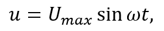
то
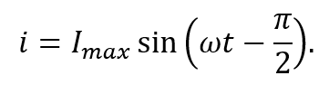
Особливість котушки індуктивності полягає у тому, що окрім реактивного опору, вона має власний активний опір, хоча зазвичай у багатьох задачах ним нехтують. Повний опір котушки можна визначити за формулою:
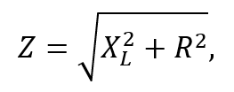
де Z – повний опір, XL – індуктивний опір, R – активний опір котушки.
Також у колах змінного струму після вимикання подачі напруги ще деякий час протікає електричний струм. Це пов’язано з тим, що довгі проводи електричних компонентів та кабелі мають схожі з конденсатором властивості – вони накопичують електричний заряд протягом того часу, коли в колі протікає струм. Тобто, проводи та кабелі мають певну власну ємність. Ця ємність при ввімкненій подачі напруги впливає на діюче значення струму, збільшуючи його. Вплив ємності кола на величину діючого значення змінного струму враховується його ємнісним опором XC.
Для пояснення залежності ємнісного опору пропонується змоделювати простий дослід. Для цього складається електричне коло з джерела струму, конденсатора та амперметра. Якщо поступово збільшувати ємність конденсатора, значення струму буде зростати, отже, ємнісний опір зменшуватиметься. Якщо збільшити частоту змінного струму, виміри амперметра також будуть зростати, що є наслідком зменшення ємнісного опору. З цього досліду випливає, що ємнісний опір обернено пропорційний частоті струму і ємності конденсатора.
Формула може бути доведена математичним шляхом. Миттєве значення напруги можна записати через заряд на конденсаторі та через гармонічний закон. Отримана рівність:
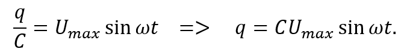
За означенням сили струму миттєве значення струму визначається як похідна заряду за часом:
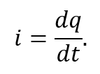
Тоді з формули струму через похідну заряду:
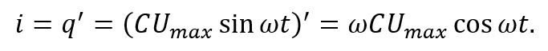
Після знаходження миттєвого значення сили струму можна визначити його амплітуду. Із отриманого виразу видно, що амплітудне значення сили струму дорівнює:
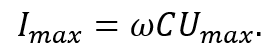
Із цієї рівності безпосередньо випливає вираз для ємнісного опору:
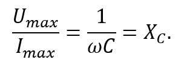
Ємнісний опір можна визначати і через відповідні діючі значення сили струму і напруги:
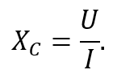
У колі з чистим ємнісним опором (конденсатор) зсув фаз між напругою та струмом дорівнює куту π/2. При цьому коливання сили струму випереджають коливання напруги. За фізичним змістом, напруга на конденсаторі у довільний момент часу визначається електричним зарядом, наявним на його пластинах, який утворюється внаслідок проходження струму, необхідного для зарядки конденсатора. Саме тому коливання напруги відстають від коливань струму.
Математично це також підтверджується отриманим виразом для миттєвого значення сили струму:
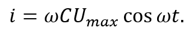
Застосувавши тригонометричні формули зведення, можна перетворити функцію косинуса і подати у вигляді синуса:
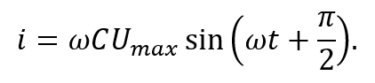
Таким чином, стає очевидно, що коливання сили струму випереджають коливання напруги на кут π/2.
У реальних колах, що містять різні види опору (у тому ж числі – активний), величина зсуву фаз є меншою за π/2 і залежить від параметрів кола.